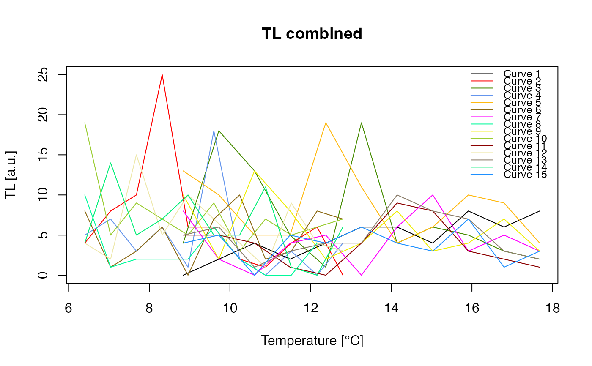

Trim off the number of channels of RLum.Data objects of similar record type on the time domain. This function is useful in cases where objects have different lengths (short/longer measurement time) but should be analysed jointly by other functions.
trim_RLum.Data(object, recordType = NULL, trim_range = NULL)RLum.Data RLum.Analysis (required): input object, can be a list of objects. Please note that in the latter case the function works only isolated on each element of the list.
character (optional): type of the record where the trim should be applied. If not set, the types are determined automatically and applied for each record type classes. Can be provided as list.
numeric (optional): sets the trim range (everything within the range + 1 is kept). If nothing is set all curves are trimmed to a similar maximum length. Can be provided as list.
A trimmed object or list of such objects similar to the input objects
The function has two modes of operation:
Single RLum.Data objects or a list of such objects The function is applied separately over each object.
Multiple curves via RLum.Analysis or a list of such objects In this mode, the function first determines the minimum number of channels for each category of records and then jointly processes them. For instance, the object contains one TL curve with 100 channels and two OSL curves with 100 and 99 channels, respectively. Than the minimum for TL would be set to 100 channels and 99 for the OSL curves. If no further parameters are applied, the function will shorten all OSL curves to 99 channels, but leave the TL curve untouched.
0.1.0
Kreutzer, S., 2024. trim_RLum.Data(): Trim Channels of RLum.Data-class Objects. Function version 0.1.0. In: Kreutzer, S., Burow, C., Dietze, M., Fuchs, M.C., Schmidt, C., Fischer, M., Friedrich, J., Mercier, N., Philippe, A., Riedesel, S., Autzen, M., Mittelstrass, D., Gray, H.J., Galharret, J., 2024. Luminescence: Comprehensive Luminescence Dating Data Analysis. R package version 0.9.24.9000-106. https://CRAN.R-project.org/package=Luminescence
## trim all TL curves in the object to channels 10 to 20
data(ExampleData.BINfileData, envir = environment())
temp <- Risoe.BINfileData2RLum.Analysis(CWOSL.SAR.Data, pos = 1)
c <- trim_RLum.Data(
object = temp,
recordType = "TL",
trim_range = c(10,20))
plot_RLum.Analysis(
object = c,
combine = TRUE,
subset = list(recordType = "TL"))

## simulate a situation where one OSL curve
## in the dataset has only 999 channels instead of 1000
## all curves should be limited to 999
temp@records[[2]]@data <- temp@records[[2]]@data[-nrow(temp[[2]]@data),]
c <- trim_RLum.Data(object = temp)
nrow(c@records[[4]]@data)
#> [1] 999